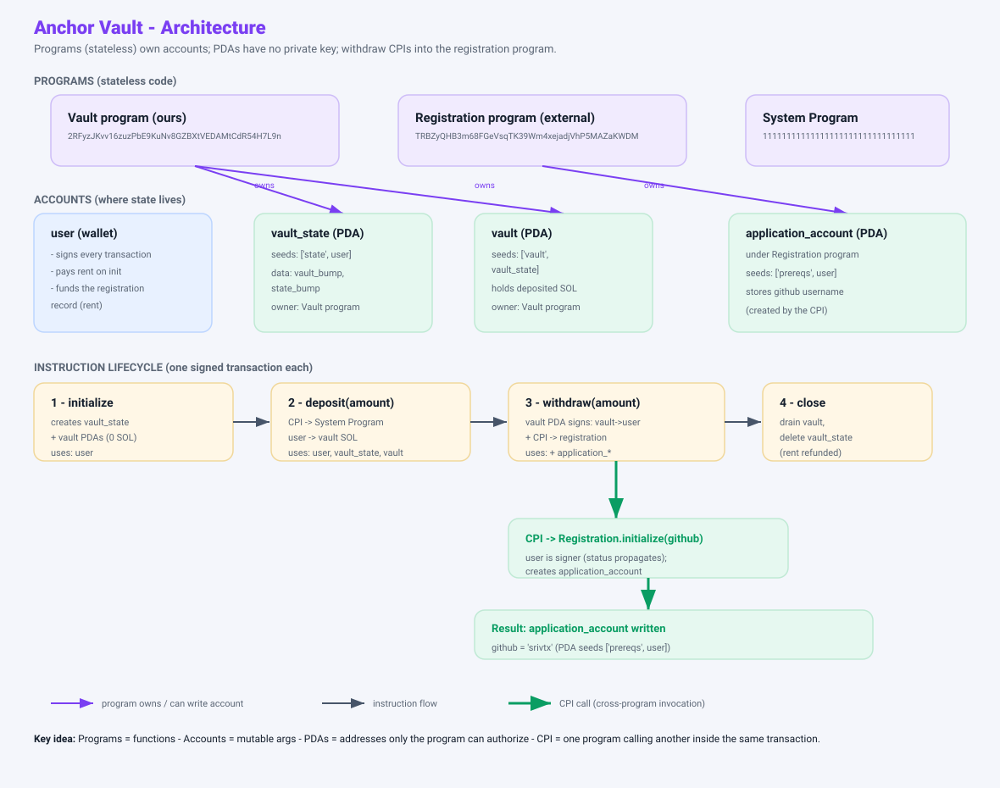
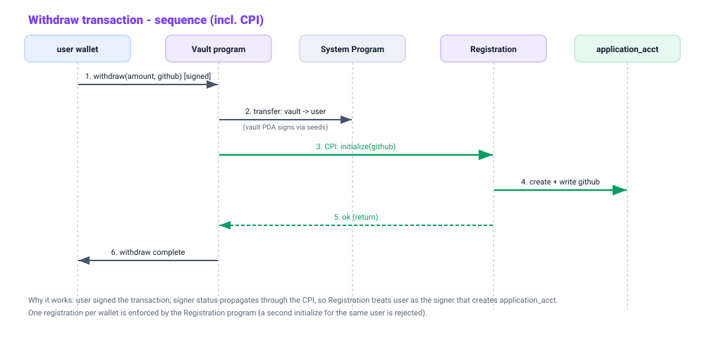

A Solana program that lets a user lock SOL into a vault they control — and, in Task 2, registers them on another program during withdrawal. Start at 0; no Solana background assumed. Section 7+ maps directly to the repo you were given.
Imagine a single global spreadsheet everyone can read and a network keeps in sync. "Running a program" means proposing a change to that spreadsheet and getting it accepted.
Two ideas sit under everything:
A transaction = list of accounts + one or more instructions + signatures.
An instruction is one call into one program: "run deposit with amount = 1 SOL, using these accounts." A transaction can chain several — that's how one action touches multiple programs (Task 2).
A program is deployed executable code at an address. It has no memory of its own between calls.
All lasting info lives in accounts: independent records addressed by their own keys. When a program runs, the accounts you passed in are its only inputs and the only things it can modify.
Every account is just a record:
Two rules that matter for the Vault:
data. Our vault program owns vault_state.lamports. That's why moving SOL out of the vault needs the vault's cooperation.Storing data costs a little SOL called rent. Creating an account pre-pays rent (recoverable by closing it).
initialize, user is the payer. In close, close = user returns the rent when the account is deleted.We want a vault holding your SOL that only our program can empty. Normal accounts are owned by a keypair — whoever holds the key signs. We can't safely embed a secret key in code.
Because the result is forced off the elliptic curve, there is no private key for it.
seeds + bump — the "signer seeds". The runtime recomputes the address, sees it matches, and accepts the signature.That is the whole security model: SOL leaves the vault PDA only when our program presents the correct seeds — impossible to forge.
Raw Solana programs are verbose. Anchor generates the boilerplate:
seeds, bump, mut, payer, init…); Anchor validates them first.CpiContext + generated clients make calling another program one line.#[account(seeds=[b"vault", ...], bump)] means: "Anchor already proved this is the right PDA before calling your function."Here is the actual repo you were given, and what each file is for. Nothing here changes until Task 2.
cluster = "devnet", sets the wallet, and names the test command. Note: it lists the program under [programs.localnet] with a placeholder id DBoobRVqT7PaAhq8obqo95723CHyWvcCLRUKvQ5wYWE4 — this is what we'll replace when we deploy our own.declare_id! sets the program address; the #[program] block lists the four callable functions. Each just forwards to a method on its accounts struct:pub fn initialize(ctx: Context<Initialize>) -> Result<()> { ctx.accounts.intialize(&ctx.bumps) }
pub fn deposit(ctx: Context<Deposit>, amount: u64) -> Result<()> { ctx.accounts.deposit(amount) }
pub fn withdraw(ctx: Context<Withdraw>, amount: u64) -> Result<()> { ctx.accounts.withdraw(amount) }
pub fn close(ctx: Context<Close>) -> Result<()> { ctx.accounts.close() }vault_state PDA:pub struct VaultState {
pub vault_bump: u8, // bump of the vault PDA
pub state_bump: u8, // its own bump
}COUNTER_SEED, MAX_COUNT, and the Unauthorized/CounterOverflow errors are not used by the vault. Ignore them.TRBZyQHB3m68FGeVsqTK39Wm4xejadjVhP5MAZaKWDM, an initialize instruction that takes github: string and writes an ApplicationAccount PDA at seeds ["prereqs", user], and an ApplicationAccount type holding user, bump, pre_req_ts, pre_req_rs, github.it(...) blocks: initialize → deposit 1 SOL → withdraw 0.5 SOL → close. It already imports the registration program id and derives applicationAccount for the withdraw call — but the program currently ignores them.Read these as the "before" state. Task 2 only edits withdraw.rs (plus the github arg).
pub struct Initialize {
pub user: Signer, // pays rent, signs
pub vault_state: Account<VaultState>, // init PDA ["state", user]
pub vault: SystemAccount, // PDA ["vault", vault_state]
pub system_program: Program<System>,
}
// stores both bumps into vault_state, nothing elsevault_state remembers the bumps.// CPI into System Program: transfer(amount) from user -> vault
let cpi_ctx = CpiContext::new(System::id(), Transfer { from: user, to: vault });
transfer(cpi_ctx, amount)?;pub struct Withdraw {
pub user: Signer, // signs the tx
pub vault: SystemAccount, // the money box (mut)
pub vault_state: Account<VaultState>,
// ↓↓↓ these two are declared but UNUSED right now ↓↓↓
pub application_account: UncheckedAccount, // PDA ["prereqs", user] under registration program
pub application_program: Program<registration::program::Q3PreReqsRs>,
system_program: Program<System>,
}
pub fn withdraw(&mut self, amount: u64) -> Result<()> {
// 1) vault PDA signs, transfer SOL -> user (works today)
let seeds = &[b"vault", vault_state.key, &[vault_state.vault_bump]];
let cpi_ctx = CpiContext::new_with_signer(System::id(), transfer, &[&seeds]);
transfer(cpi_ctx, amount)?;
// 2) ← EMPTY: this is where the CPI to registration goes (Task 2)
Ok(())
}application_* accounts are passed in by the test but never touched.// vault PDA signs, transfer ALL its lamports -> user, then close vault_state
transfer(cpi_ctx, self.vault.lamports())?;initializedeposit(amount)withdraw(amount) — vault must signSOL leaves an account the vault owns → the vault PDA must sign. Task 2 adds the registration CPI right after.
close| Instruction | Signers | Net vault SOL |
|---|---|---|
initialize | user | 0 (accounts created) |
deposit | user | + amount |
withdraw | user + vault PDA | − amount |
close | user + vault PDA | → 0 (closed) |
withdraw already declares application_account + application_program but never uses them. We fill the empty slot.
withdraw, after the SOL transfer)let cpi_accounts = Initialize {
user: self.user.to_account_info(),
account: self.application_account.to_account_info(),
system_program: self.system_program.to_account_info(),
};
let cpi_ctx = CpiContext::new(self.application_program.to_account_info(), cpi_accounts);
initialize(cpi_ctx, github)?; // github: your username (String)user signed the tx, and signer status propagates through a CPI, so the registration program accepts user as signer and creates application_account.initialize for the same user is rejected. So we deploy our own vault program and run the flow once per wallet.The binary is fixed. Data inside the two PDAs changes: bumps on initialize, lamports up on deposit, down on withdraw, accounts gone on close.
With Task 2, a single withdraw touches Vault (logic), System (SOL), and Registration (record). Composability via CPI is the core idea.
You now understand the repo file-by-file and what the current code does. When ready, we edit withdraw.rs (add the CPI + a github argument), deploy our own program to devnet, and run the TS test.
Only one file changes behaviour: instructions/withdraw.rs. The rest is wiring so it compiles, deploys, and is testable.
initialize:// after transferring SOL back to the user:
let cpi_program = self.application_program.key();
let cpi_accounts = Initialize {
user: self.user.to_account_info(),
account: self.application_account.to_account_info(),
system_program: self.system_program.to_account_info(),
};
let cpi_ctx = CpiContext::new(cpi_program, cpi_accounts);
initialize(cpi_ctx, github)?; // records github in the registration programlib.rs: pub fn withdraw(ctx, amount: u64, github: String) — added the github argument.tests/pre-req-vault.ts: the test now calls withdraw(amount, "srivtx").programs/pre-req-vault/idls/registration.json: copied the registration IDL here so declare_program!(registration) can generate the CPI client at compile time.2RFyzJKvv16zuzPbE9KuNv8GZBXtVEDAMtCdR54H7L9n (via a new keypair + anchor keys sync + solana program deploy).withdraw transaction now (1) returns SOL to the user and (2) records the wallet's GitHub username in the registration program — provably from our program.Each choice traces back to a first-principles constraint of Solana/Anchor. Read the right column as "what happens because of the left."
| Decision we made | First-principles cause | Effect / consequence |
|---|---|---|
Add github: String to withdraw | Registration.initialize requires a github arg to record "your details" | Instruction signature changes → IDL regenerated → TS test updated to pass "srivtx" |
| Do the CPI after the SOL transfer | Withdraw already returns user SOL; the registration program is separate, so it must be called, not inlined | One transaction now touches 3 programs (Vault, System, Registration) |
CpiContext::new(program_pubkey, accounts) | Anchor 1.x changed the API: the first arg is the target program's Pubkey, not an AccountInfo | We pass self.application_program.key() (cost us one compile error to learn) |
Copy registration IDL into crate idls/ | declare_program! needs the IDL at compile time to generate the CPI client | Build succeeds; Initialize + initialize become callable |
| Deploy our own program id | Grader verifies the CPI is NOT from the provided program or a direct call | Fresh keypair → anchor keys sync → solana program deploy to devnet |
| Run the flow once per wallet | Registration program rejects a 2nd initialize for the same user | Use a fresh wallet if you re-test; the vault was already closed |
Accept pre_req_rs = false | initialize only records github; submit_rs sets that flag later | Success criterion (github recorded) is met; the boolean is out of scope |
1. Stateless program → accounts passed in → vault_state stores bumps.
Because the program remembers nothing, every call must re-prove account identity. The vault_state PDA exists purely to persist the vault_bump/state_bump so the program can later re-derive & sign for the vault PDA.
2. PDA has no private key → only the program can sign (via seeds) → vault is safe.
The vault PDA is "off the curve", so no one can ever hold its key. SOL only leaves it when our program presents signer_seeds (seeds + bump). That makes withdraw the only path that can move SOL out — and the path we extended.
3. Signer status propagates through a CPI → registration accepts our user → account created by OUR program.
The user signed the outer transaction. Mid-execution, when we CPI into registration, that signer privilege carries over, so registration treats user as the signer that creates application_account. Crucially the CPI originates inside our deployed vault program — exactly what the grader checks.
4. One registration per wallet (enforced on-chain) → we deploy our own program → run once.
The registration program itself rejects a duplicate initialize. So the whole initialize→deposit→withdraw→close sequence must execute against a wallet that has not registered yet.
Two views: a structure diagram (programs own accounts; PDAs; the instruction flow with the CPI branch) and a sequence diagram of one withdraw transaction.


architecture-diagram.svg, sequence-diagram.svg) so they can be opened or edited directly (e.g. in draw.io / Excalidraw).That is the complete picture: what we wrote, why each decision follows from Solana's model, and how the pieces fit. Use the structure + sequence diagrams for the Task 3 deliverable and the video.